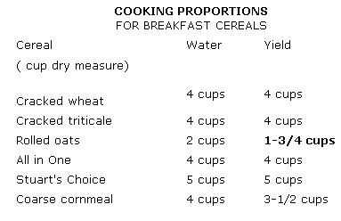

"It's one thing-though nothing small-to turn out a flawless souffle," says Carol Flinders. "It's quite another to come up with an endless variety of appealing, highly nutritious vegetarian meals using only basic, inexpensive, easily available foods. This is the art our book is meant to convey."
And the team of Laurel Robertson, Carol Flinders, and Bronwen Godfrey has managed to put into words some very complete instructions on Just that art: the transformation ofeveryday staples into tasty, total-nourishment dishes for this country's growing number of "vegans" (or non-meat-eaters).
But their book, Laurel's Kitchen, with its gentle, painstaking teachings and woodcut illustrations, does even more than that. It conveys, too, its authors' conviction that good health is not "the gift of a fortunate few, blessed by heredity and lots of protein", but "the birthright of all creatures".
GRAINS, LEGUMES, NUTS, & SEEDS
Six servings or more. Include several slices of yeast-raised, whole-grain bread, a serving of beans, and a few nuts or seeds.
VEGETABLES
Three servings or more. Include one or more servings of dark leafy greens, like romaine, spinach, or chard.
FRUIT
One to four pieces. Include a raw source of vitamin C, like citrus fruits, strawberries, or cantaloupe.
MILK & EGGS
Two or more glasses of fresh milk for adults, three or more for children. (Children under nine use smaller glasses.) Other dairy products or an egg may be used to meet part of the milk requirement. Eggs are optional-up to four per week.
(Now, to give you an idea of the culinary range of Laurel's Kitchen, we've gone ahead and chosen sample recipes from the book to meet some of the meal-planning suggestions on the above daily menu. - MOTHER.)
Obviously, there are any number of ways you can fulfill the Four Food Group requirements. A daily menu that looks something like the one that follows, for example, would be quite adequate.
BREAKFAST: Hot cereal with milk, fruit, and sunflower seeds, whole-grain bread, toasted, with margarine or peanut butter. LUNCH: Bean spread sandwich on whole-grain bread with lettuce, raw vegetables or vegetable soup, fresh fruit, glass of milk or buttermilk. DINNER: Green salad with dressing, cooked vegetables, grain, bean, or noodle dish, yogurt or cottage cheese.
Readers of Frances Moore Lappe's fine book, Diet for a Small Planet, will undoubtedly wonder why we've paid no attention to the finer points of protein complementarity, particularly the idea that it's necessary to balance amino acids within a half-hour period. We've discovered that there's good reason to relax on that score and consider the whole day's menus rather than just the foods in each meal, for there's considerable evidence that the body is able to make the fine adjustments of amino acid balance if we just supply it with enough protein from a diet of balanced foods.
ALL IN ONE CEREAL: 2 cups cracked wheat, 1 cup rolled oats, 1/2 cup toasted wheat germ, 1/2 cup raw wheat germ, 1/2 cup soy grits, 1/2 cup wheat bran, 1 cup coarse cornmeal.
STUART'S CHOICE: 2 cups cracked wheat, I cup coarse cornmeal.
Hot cereal is a staple item on our breakfast table, not only because it's a nutritionally excellent way to serve grains but because it's so inexpensive, simple, and satisfying. Keep a good variety of cereals on hand. Wheat is perhaps the best all-round cereal, but each has its own nutritional strengths and its own personality.
One way to ensure variety is to mix up a good supply of cereal combinations. Prepare them as indicated on the chart below. Buying in bulk minimizes cost and wasteful packaging. Kept in a dry, cool place, in airtight containers, cereal grains will keep well almost indefinitely. In the case of All in One, though, mix up just a week's worth at a time, or add the wheat germ when you're preparing it; wheat germ needs refrigeration.
Cereal grains cooked for breakfast call for a little more water than those served at dinner; otherwise, the cooking method is the same. Use 1/4 to 1/2 teaspoon salt for each cup of grain. Bring salted water to a boil and pour cereal in slowly. Cook and stir for a minute or two, then cover and cook over very low heat (a double boiler is ideal) for 20 to 25 minutes. Milk may be used in place of water.
NOTE: A double boiler is a carefree way to prepare hot cereals, and as the cereal is not directly over the flame, B vitamins are not destroyed.
BASIC RECIPE: 2-1/2 cups warm water, 1 tablespoon brown sugar, 1 tablespoon active dry yeast, 1 tablespoon salt, 6 cups whole wheat flour.
Here's the blueprint for our standard miracle loaf. Every frill has been removed, so it's perfect for beginners.
Pour the warm water into a large bowl. Add the sugar and sprinkle the yeast on top of the water. In a few minutes, when the yeast comes bubbling to the top, stir in half of the whole wheat flour and beat very well, until the dough ceases to be grainy and becomes smooth and stretchy.
Add the salt and the remaining flour cup by cup, mixing well. Knead it in the bowl until it's no longer sticky, then turn it out onto a floured board.
As the dough gets stiffer and harder to knead, sprinkle the remaining flour a little at a time on the tabletop or board and knead the dough on top of it.
Knead, push, and fold until the dough is soft and springy to touch, and return it to the bowl. Cover the bowl snugly, allowing room for the dough to double in bulk.
Grease two loaf pans or two 46-ounce juice cans. Divide the dough in half and flatten each half into an oblong the length of the loaf pan, or, if you're using cans, roll the dough into an egg-shaped blob, pinching the substance tightly together at the seams. Slide the formed loaves into the pans, or push them down into the cans, and press down all around the sides so that no air is trapped below.
Cover the pans or cans to protect them from drafts and let the loaves rise once more, until they have doubled in bulk.
Preheat the oven to 375° towards the end of this rising period. When the bread is rounded just above the rim, bake it for about 40 minutes. When you remove it from the pan and tap it on the sides or bottom, it should sound slightly hollow. The color should be a rich golden brown. Allow the bread to cool, then slice and serve.
Makes 2 loaves.
VARIATIONS: Knead in 1 cup raisins or a handful of chopped herbs: oregano, dill, basil, parsley, thyme.
Form round loaves, brush with beaten egg, and bake on cookie sheets. Dough should be quite stiff for this.
INGREDIENTS: 1/2 onion (chopped), 2 tablespoons oil, 1/2 bunch parsley (chopped fine), salt to taste, 1 teaspoon basil, 1/2 teaspoon oregano, dash cumin, dash garlic, juice of 1 lemon, 3 cups cooked garbanzo beans or chickpeas (mashed, ground, or blended), 2/3 cup toasted sesame seeds (ground).
This is one of our favorites for sandwiches and cracker dips. Try it as an open-face sandwich with cucumber and tomato slices, or thin it with a little vegetable or bean stock and serve it with whole wheat crackers.
Saute onion in oil until soft. Add herbs and parsley at the last minute, just long enough to soften parsley. Mix all the ingredients together thoroughly with a fork.
Makes about 3 cups.
INGREDIENTS: 5 cups cubed raw winter squash or 3 cups cooked winter squash, 2-1/2 cups vegetable stock, 1/4 cup chopped onion, 1 tablespoon oil, 1/2 cup chopped parsley, 2 teaspoons salt, 1 teaspoon basil, 1 cup dried skim milk, 1 tablespoon torula yeast ... and 1 pound fresh spinach (optional).
This delicious soup is a great way to use leftover baked squash.
If you use raw squash or pumpkin, cook it in the broth until it is tender. Blend or puree the cooked squash and put it in your soup pot to heat.
Saute the onion in the oil, and when the onion is soft, add the parsley. Cook just long enough to soften parsley, then add, along with the seasonings, to the squash in the soup pot.
Remove a cup of the soup and put it in the blender. Add the milk powder and yeast (torula preferably) and blend them until smooth. Pour this mixture back into the soup pot and bring the soup to a simmer. Don't boil or it will stick. For a lighter soup with a strangely satiny texture, omit the milk.
Squash and spinach are the best of friends, so at the very end of the cooking time, add fresh spinach, chopped bitesize, for a colorful and vitamin-rich variation.
Makes about 7 cups.
Serve them before your main course, as most Americans do, or afterwards, in the Italian tradition, but don't fail to serve a truly splendid salad with every supper. Green salads should be the general rule. Raw leafy greens are an important source of B vitamins that are sometimes lost in cooking ... the darker green, the better, as a rule.
Variety is the key to serving salad bowls that get emptied every night, to the last leaf. Never be mechanical about the salad course, because there's always some little thing you can add at the last minute to give it heightened appeal. Here are our suggestions for the perfect green salad:
Use lettuce that is fresh, crisp, clean, cold, and dry. We dry ours gently on a clean terry towel. You can wash and dry lettuce and put it in a bag or crisper in the refrigerator, then cut and dress it just before serving.
Try several varieties of lettuce in one salad: romaine, red leaf, butter, and loose leaf make good combinations. You can probably grow them all in your backyard garden. Fresh spinach, watercress, and young, tender beet greens are all nice additions.
Don't toss salads until you're ready to serve the meal. Use dressing at room temperature; it spreads further and coats the lettuce evenly.
To make a salad into a light meal, select some of these additions: Cooked, marinated garbanzo beans (or other beans), small chunks of cheese or tofu, lightly cooked vegetables like fresh corn, string beans, sliced carrots, broccoli flowers, or beets (chill vegetables with or without marinade and add to salad before tossing), raw vegetables such as thinly sliced zucchini, celery, cucumber, cabbage, green pepper, parsley, finely grated carrot, fresh green peas, or avocado, and croutons.
Fresh herbs add so much to salads, and to other dishes as well. Grow them in a window box or in a plot near your kitchen that is shaded for part of the day. Mince fresh herbs thoroughly to bring out all their flavor. When using dried herbs, crush them first by rolling them between your hands; otherwise, the flavors stay locked in.
INGREDIENTS: 1/2 cup mayonnaise, 1/4 cup yogurt, 1/4 cup chopped parsley, 1 teaspoon chopped fresh chives, 2 tablespoons vinegar, 1/4 teaspoon salt, dash pepper, 1/2 teaspoon basil.
Good on cabbage as well as lettuce salads.
Blend everything except mayonnaise. Stir with mayonnaise.
Makes 1 cup.
INGREDIENTS: 1/4 cup margarine, 2 green onions (sliced), 3 tablespoons whole wheat flour, 2 cups milk, 1/4 cup chopped parsley, 1-1/2 teaspoons salt, 1/2 teaspoon pepper, 1/4 teaspoon thyme, dash garlic, dash nutmeg, 1 cup low-fat cottage cheese, 4 cups cooked whole wheat or whole wheat-soy macaroni or noodles (8-ounce package), 1/4 cup toasted wheat germ, 3 cups cut-up cooked vegetables, 1 cup grated cheddar or Swiss cheese, 1 cup whole-grain bread crumbs.
Preheat oven to 3500.
Saute onions in margarine until soft. Blend in flour and cook over medium heat several minutes, stirring constantly. Slowly add the milk, continuing to stir. Add the cottage cheese and seasonings. Cook until sauce thickens. Combine noodles, vegetables, and sauce, and pour into greased 2-1/2-quart baking dish. Top with cheese and bread crumbs. Bake until piping hot and bubbly (15 to 20 minutes).
Serves 6 to 8.
|
|
|
 |